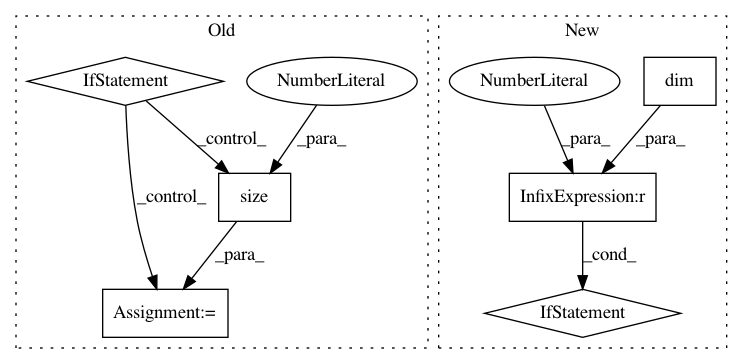

91b0d220c8e816766fd4565e1d2f5115d3afbefe,gpytorch/lazy/lazy_tensor.py,LazyTensor,matmul,#LazyTensor#Any#,630
Before Change
if lazy_tsr.ndimension() == 3 and tensor.ndimension() == 3:
if lazy_tsr.size(0) == 1 and tensor.size(0) > 1:
lazy_tsr = lazy_tsr.repeat(tensor.size(0), 1, 1)
elif tensor.size(0) == 1:
tensor = tensor.expand(lazy_tsr.size(0), tensor.size(1), tensor.size(2))
elif self.ndimension() > 3 or tensor.ndimension() > 3:
raise RuntimeError
func = Matmul(self.representation_tree())
After Change
is the matrix that this :obj:`gpytorch.lazy.LazyTensor` represents, and :math:`M` is the matrix input
to this method.
if (self.dim() == 2 and tensor.dim() == 1):
if self.shape[-1] != tensor.numel():
raise RuntimeError(
"LazyTensor (size={}) cannot be multiplied with right-hand-side Tensor (size={}).".format(
self.shape, tensor.shape
)
)
elif self.dim() != tensor.dim():
raise RuntimeError(
"LazyTensor (size={}) and right-hand-side Tensor (size={}) should have the same number "
"of dimensions.".format(self.shape, tensor.shape)
)
elif self.batch_shape != tensor.shape[:-2] or self.shape[-1] != tensor.shape[-2]:
raise RuntimeError(
"LazyTensor (size={}) cannot be multiplied with right-hand-side Tensor (size={}).".format(
self.shape, tensor.shape
)
)
func = Matmul(self.representation_tree())
return func(tensor, *self.representation())
@property
In pattern: SUPERPATTERN
Frequency: 4
Non-data size: 6
Instances
Project Name: cornellius-gp/gpytorch
Commit Name: 91b0d220c8e816766fd4565e1d2f5115d3afbefe
Time: 2018-10-12
Author: gpleiss@gmail.com
File Name: gpytorch/lazy/lazy_tensor.py
Class Name: LazyTensor
Method Name: matmul
Project Name: rusty1s/pytorch_geometric
Commit Name: f8c40c1d576bc4e1c4edd51b288a7e398b37f5ce
Time: 2018-12-12
Author: matthias.fey@tu-dortmund.de
File Name: torch_geometric/nn/conv/graph_conv.py
Class Name: GraphConv
Method Name: forward
Project Name: mariogeiger/se3cnn
Commit Name: 9c309a959052ec40cf92cf4baa3894f5118cf8c4
Time: 2019-07-08
Author: geiger.mario@gmail.com
File Name: se3cnn/blocks/point_gated_block.py
Class Name: PointGatedBlock
Method Name: forward
Project Name: rusty1s/pytorch_geometric
Commit Name: f8c40c1d576bc4e1c4edd51b288a7e398b37f5ce
Time: 2018-12-12
Author: matthias.fey@tu-dortmund.de
File Name: torch_geometric/nn/conv/sage_conv.py
Class Name: SAGEConv
Method Name: forward